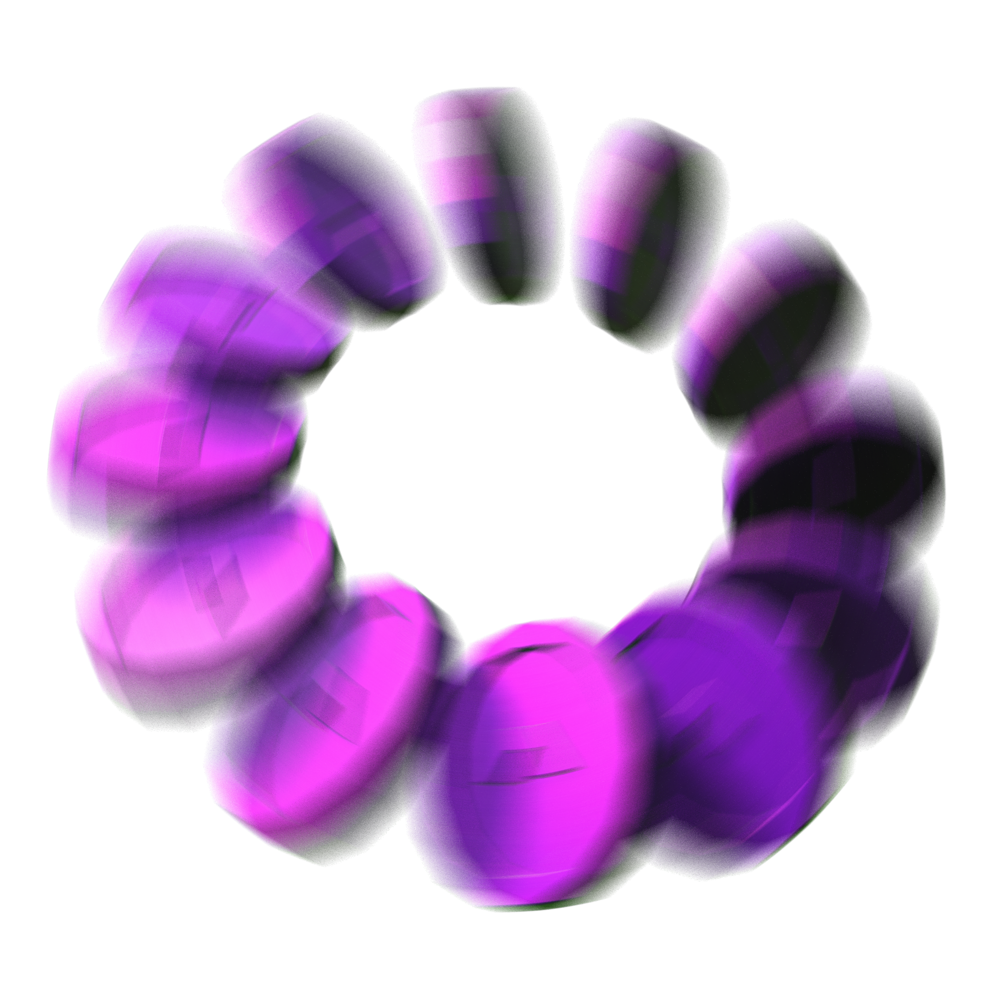
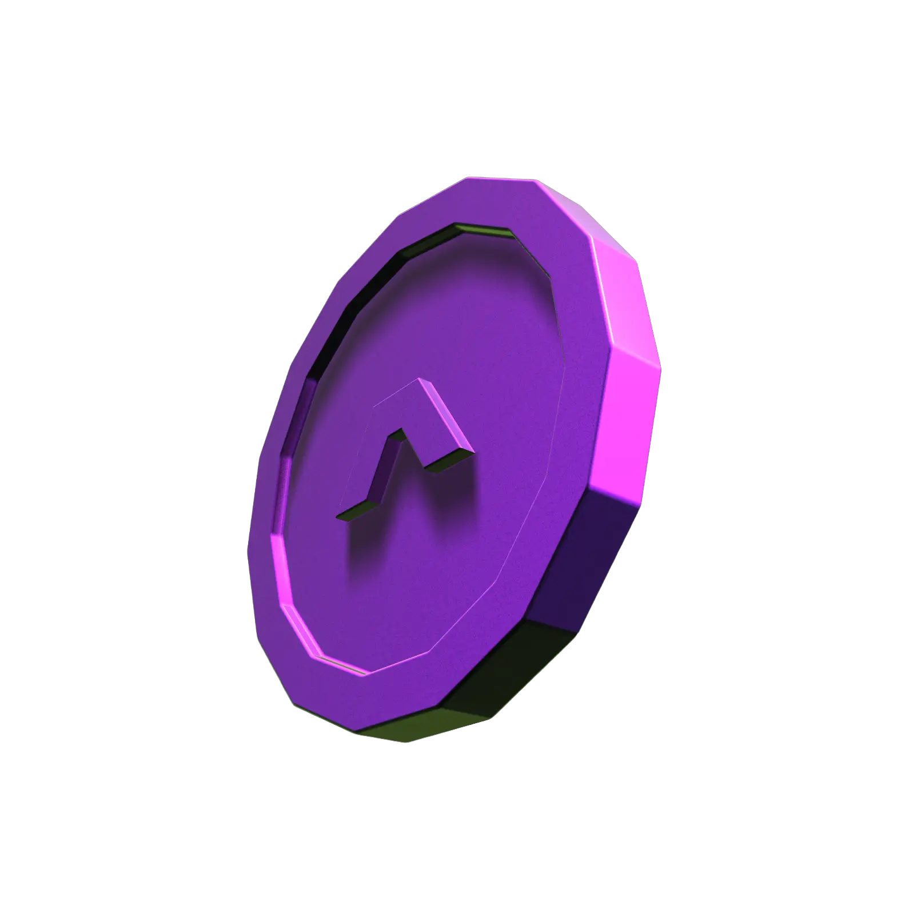

Nuestro equipo
Detrás de tu banco
digital, gente real
Un equipo venezolano que construye, escucha y responde — para que tu banca se sienta cercana.

Abre tu cuenta hoy y disfruta de una experiencia digital única desde nuestra Banca en Línea.
Galería

Pago Móvil
Realiza tus transacciones al instante de manera rápida y segura desde cualquier lugar con nuestro Pago Móvil N58.
Gestiona y paga tus facturas de forma rápida y segura desde nuestra Banca en Línea, sin complicaciones.
Productos
Abre tu Cuenta Corriente o en Moneda Extranjera y maneja tu dinero sin complicaciones, sin visitar una agencia.
Envía y recibe pagos al instante, a cualquier banco y desde cualquier lugar, de manera rápida y segura.
Realiza tus operaciones de compra y venta de divisas con total seguridad y al mejor tipo de cambio.
Divisas
Realiza tus operaciones de compra y venta de divisas con total seguridad y al mejor tipo de cambio.

Novedades
Nuestro equipo
Un equipo venezolano que construye, escucha y responde — para que tu banca se sienta cercana.
Comunidad
+50mil
cuentas abiertas 100% digital, sin pisar una agencia.
Cultura N58
Le hablamos claro
a la gente.
Detrás de N58
“Construimos el banco que a nosotros mismos nos gustaría usar.”
— El equipo N58
Nuestra gente
Hecho en Venezuela, para venezolanos.
Seguridad
Tus datos tras un vidrio que solo tú cruzas: verificación en cada paso y cifrado de punta a punta.
Encuentra respuestas rápidas a tus dudas.
La aprobación toma menos de 24 horas una vez verificados tus datos.
Solo tu cédula de identidad vigente y un correo electrónico activo.
Easter egg
Recoge las monedas antes de que se acabe el tiempo. AlaN salta paredes — tú pones el ritmo.